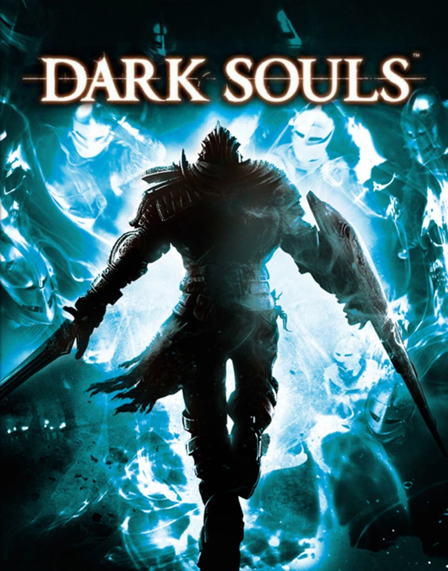

Portadas


Dark Souls es una serie de videojuegos de rol y acción desarrollada por FromSoftware. La serie es conocida por su dificultad y su atmósfera oscura y misteriosa.
Dark Souls es un juego que se desarrolla en el mundo de Lordran, un reino en decadencia, donde los jugadores asumen el papel de un no muerto, un ser maldito con la tarea de enlazar la llama y reavivarla. La historia se desarrolla en un mundo oscuro y desolado, lleno de peligros, enemigos desafiantes y personajes misteriosos.
A medida que el jugador avanza a través del juego, se encuentra con diversas facciones y personajes, cada uno con su propia parte en la historia. El juego está lleno de narrativa ambiental y fragmentada, lo que significa que gran parte de la historia se revela a través de descripciones de objetos, diálogos y eventos del juego, lo que fomenta la exploración y la inmersión del jugador en el mundo.
A medida que el jugador lucha contra jefes desafiantes, supera obstáculos y toma decisiones, influirá en el curso de la historia y el destino de Lordran. La trama está llena de elementos oscuros, mitología y referencias a la decadencia y la inevitabilidad de la muerte, lo que contribuye a la atmósfera única y a menudo desesperada del juego.
Regresar ☝🏻Dark Souls 2 se desarrolla en el reino de Drangleic, un lugar atormentado por la maldición de los no muertos. Los jugadores asumen el papel de un personaje no muerto que busca descubrir la causa de la maldición y encontrar una forma de romperla. A medida que exploran este mundo sombrío, se encuentran con una variedad de personajes, cada uno con su propia historia y motivaciones.
La historia de Dark Souls 2 se centra en el concepto de la "llama refulgente", que desempeña un papel fundamental en el juego. A lo largo de la trama, los jugadores descubren que la llama refulgente es una fuerza misteriosa que ha estado encendida durante siglos, pero que se está apagando gradualmente, lo que amenaza con sumir al mundo en la oscuridad y el caos.
A medida que los jugadores avanzan, se enfrentan a desafíos, toman decisiones y se cruzan con personajes que pueden influir en el destino de Drangleic. La historia es en gran medida fragmentada y está dispersa por el mundo del juego, lo que requiere que los jugadores conecten los puntos y descubran la verdad detrás de la maldición de los no muertos y la lucha por la llama refulgente.
Regresar ☝🏻Dark Souls 3 se desarrolla en el mundo de Lothric, un reino en decadencia atormentado por la maldición de los no muertos. Los jugadores asumen el papel de un personaje conocido como el "Sin Nombre", que es llamado a cumplir con una antigua profecía y enlazar las llamas para evitar que el mundo caiga en la oscuridad.
A lo largo del juego, los jugadores se enfrentan a una variedad de desafíos, enemigos y jefes poderosos, mientras exploran la historia de Lothric y descubren los secretos de su mundo. La historia se teje con temas de sacrificio, redención y la lucha eterna entre la luz y la oscuridad.
Dark Souls 3 también está conectado con los juegos anteriores de la serie, y los jugadores pueden encontrar referencias y conexiones con personajes y eventos de entregas anteriores. La narrativa es rica en detalles y presenta un mundo complejo lleno de historias secundarias y misterios por descubrir.
Regresar ☝🏻